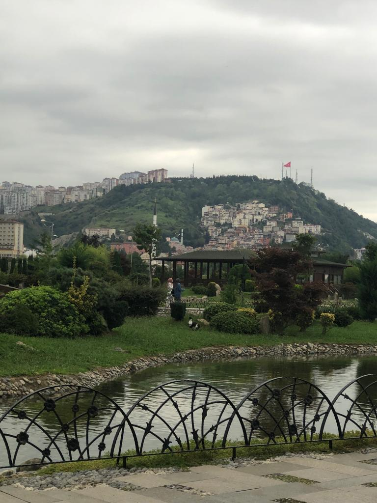
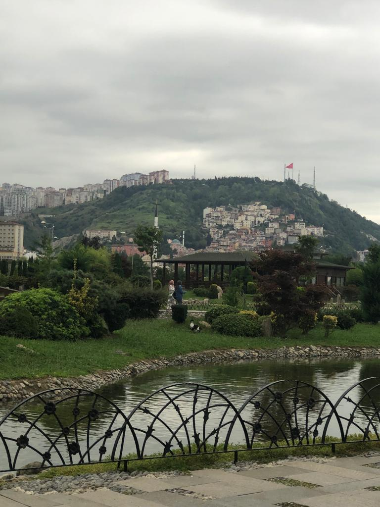

About my trip to Trabzon
chosing to spend time on the seafront because that is where the residents tended to congregate.
The main sights are chai gardens and tiny eateries specializing in fish cuisine.
The quantity of painting I witnessed amazed me.
The Hotel I stayed in
Mercure Hotel, It is just a fabulous new hotel near the airport.
They have a breathtaking view.
under the blue sky, the sun shines brightly on the horizon

What’s the Weather Like?
Summers in Trabzon are
warm, humid, and clear, while winters are long, chilly, and mostly rainy.
 

Relaxation in Trabzon
Taking a vacation from the hustle
is necessary for your mind to rest, recharge, and refresh.